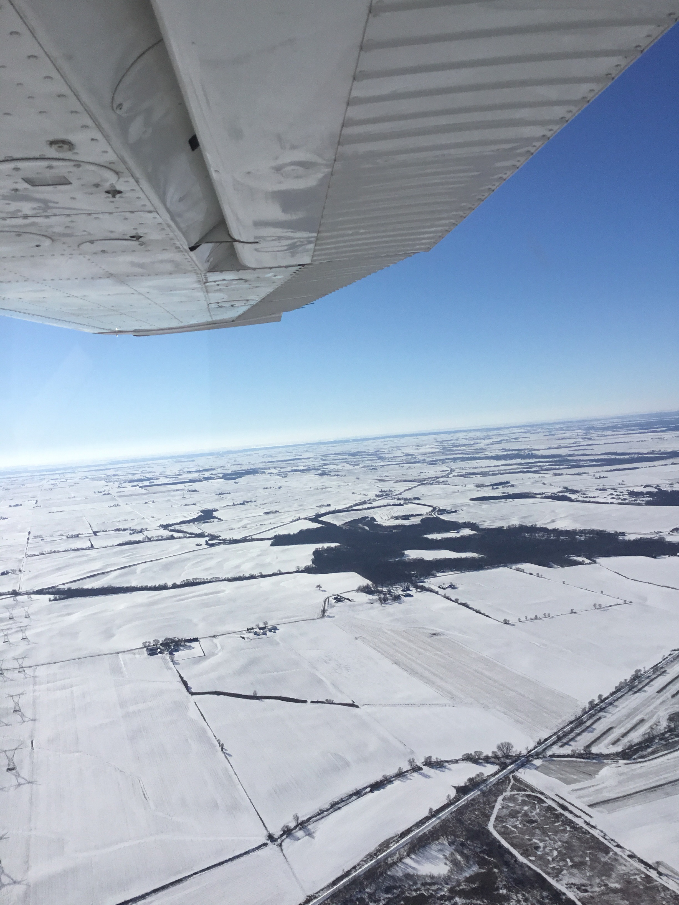
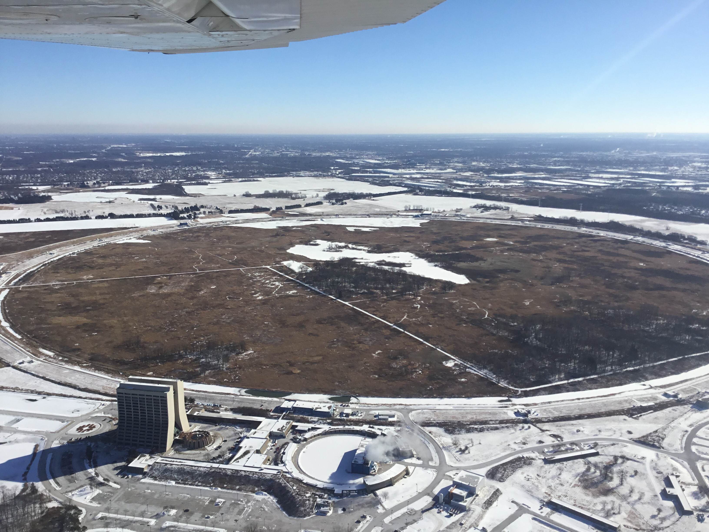

Today was not your ordinary Saturday. In fact, it was far from it. The day began bright and early at 6:00 a.m., with a quick breakfast and pre-flight to leave and arrive at the airport by 0730. The plan was a solid morning of flying with my two friends Tomek and Irek. The weather was forecast to be clear but slightly cold; my suspicions were confirmed when my car indicated -5F OAT while en route to the airport. It was so cold that I thought twice about actually going through with the plan and flying. What would happen if the airplane would force us to make an unscheduled landing somewhere other than an airport, am I adequately equipped to brave the elements for an extended period of time? It may seem laughable, but there are areas in Illinois that are quite remote. Thinking these things through caused me to change my original plan of flying to BMI from DKB, into simply flying more in the general vicinity of the airport. The plan was to begin logging some simulated IFR time and working towards the requirements of the IR.
As Tomek pulled up to the hangar, we quickly made our way to the aircraft to check on how everything was looking. Upon entering the hangar however, I noticed that the aircraft engine block heater electrical plug was hanging out of the wall socket. Touching the cowling of the Piper Archer confirmed my thoughts; the engine wasn’t pre-heated. This fact, was, in essence the nail in the coffin for our flying plans for the day. We figured no chance that the O-360-A4M would ignite under these temperatures. Additionally, the aircraft was not flown for at least the last two weeks, adding to the fact that it’s been sitting in the hangar for quite a few days with no use. Instead, we attempted to plug the aircraft into electrical in order to turn the GPS 430 and ASPEN E1000 on and get some ground training in the operation of these fantastic pieces of technology. This plan, however, was not completed because we ran out of electrical sockets in the hangar! We shut down and exited the hangar, in clear defeat.
Upon leaving the airport, I noticed another club member getting ready to fly in the club’s 172S aircraft. They volunteered for me to hitch a ride in the back seat. I agreed, at least I’d get some sort of air time today, even if it meant not logging Simulated IFR, XC, nor PIC time. This particular club member was in the final stages of obtaining his instrument rating, so the trip would be a valuable glimpse into understanding and seeing IFR practice procedures in the real world. The trip commenced with a standard take off from 28 at KDPA, proceeding direct to join the RNAV approach at KDKB for RWY 20. It was amazing how fast the aircraft climbed and how little power was needed to keep a 172S at gross weight straight and level. At the MDA, the pilot executed the missed approach procedure and proceeded direct to the holding fix and executed some holds. It was very interesting to see. I understood the wind correction angles and the timing of the legs and standard rate turns, but, it was difficult for me to visualize the overall procedure.
After the procedures at DKB were completed, we proceeded to shoot the VOR-A approach at C09, Morris. The approach is based from the JOT VOR, with a circling minimum published for the approach because the final approach course does not bring you directly in for a runway, but rather, into the airport environment. Once visual with the field, the expectation would be that the pilot would execute a circling maneuver for either of the runways. The last approach was the ILS 02L into DPA with Chicago Approach coordinating the entire procedure on 133.50. Very fun to listen to the pilot call and request the IFR procedure. Chicago Approach was very accommodating. Some photos of the day’s flying activities are posted below:

